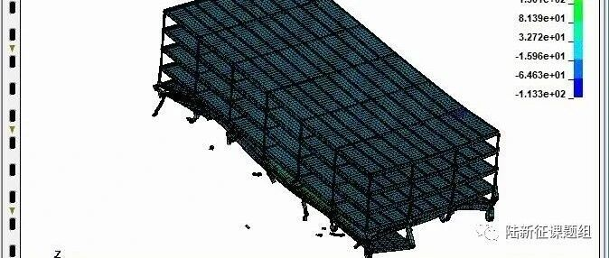

钢结构倒塌有限元模拟
引言与声明
本研究采用有限元软件MSC.Marc和LS-DYNA，对一栋七层钢框架倒塌过程进行了模拟，重点介绍如何采用有限元软件MSC.Marc和LS-DYNA模拟钢结构倒塌过程，主要目的是介绍计算机模拟在相关领域的应用情况，并锻炼有限元分析的技能。本研究仅为研究生学习有限元分析的资料，所有数据均由参与分析的研究生自行假定，仅供学习交流，不得作为任何其他用途。
本次分析由北京工业大学研究生赵子栋、清华大学研究生张弛、廖文杰、金鑫磊、赵鹏举等完成。
研究案例的结构信息
（1）结构布置与构件尺寸
该研究案例的钢结构横向两跨（y方向7m、14m），纵向六跨（x方向每跨8m），标准层平面布置图和典型横向一榀框架图，分别如图1、图2所示，单位mm。钢梁、钢柱均为H型钢，截面尺寸参考《钢结构》教材确定。楼板为120mm厚C30混凝土板。

图1 标准层平面布置图

图2 典型横向一榀框架
（2）荷载布置
楼板均布荷载根据《建筑结构荷载规范》GB 50009-2012初步确定，其中恒载（含自重） 4 kN/m^2，活载2 kN/m^2。考虑到实际使用情况，采用1D+0.5L的荷载施加方式。（D为恒载，L为活载）
（3）材料强度
钢梁、钢柱的材料为Q235B。
（4）初始倾斜模拟
由于结构不可避免会有轻微初始倾斜，因此对结构施加水平荷载以模拟钢结构的初始倾斜，附加水平荷载取0.1%的重力，沿结构纵向施加（即图1中x方向）。
数值模拟
1. MSC.Marc模拟
采用MSC.Marc通用有限元软件建立了该钢结构的三维有限元数值模型。其中，钢结构的梁、柱构件均采用清华大学基于MSC.Marc开发的纤维梁模型进行模拟，可考虑钢结构中杆系构件的局部屈曲。混凝土楼板采用弹性单元模拟，楼板荷载通过折算成混凝土楼板的质量来进行考虑，折算后的密度为4252 kg/m^3。
（1）不考虑底部填充墙的重力工况分析
在考虑初始倾斜的情况下，对结构进行静力分析。结构在0.91倍重力时，中柱发生屈服，出现较多塑性铰，计算结果不收敛。如图3所示。

图3 重力荷载分析结果
（2）考虑底部填充墙的重力工况分析
然后，使用支撑模拟结构底部填充墙，考虑填充墙的影响，填充墙采用纤维梁单元斜撑模拟，其截面尺寸参考FEMA-356确认。为结构施加0.1%的初始倾斜，在增加支撑的情况下重新进行了重力荷载工况（1.0D+0.5L）下的静力分析，此时结构能够承受全部重力荷载。支撑的布置与重力分析结果如图4所示。

图4 支撑存在时重力荷载分析结果
（3）拆除底部填充墙的倒塌模拟
在上述初始倾斜与重力荷载稳定的情况下采用非线性动力加载，通过单元生死方法移除模拟填充墙的支撑构件，分析剩余结构的动力响应。在拆除底部支撑构件之后，结构柱沿纵向（x向）屈服，出现塑性铰，最终发生倒塌破坏。结果如图5所示。

图5 拆除支撑后的倒塌过程
（4）倒塌机制初步分析
上述分析结果表明，填充墙的存在增加了框架柱弱轴的稳定性，使其没有出现失稳而倒塌。在拆除填充墙后，框架柱弱轴方向的约束失效，导致其沿弱轴（即结构的纵向）失效，最终整个结构沿纵向倒塌。
2. LS-DYNA模拟
参考MSC.Marc计算模型，通过有限元软件LS-DYNA模拟了该建筑失去底部填充墙（支撑）后，在上述初始倾斜存在的情况下研究其倒塌情况。
有限元模型如图6所示。该模型中H型梁、柱均采用梁单元，通过改变其截面积分形式来模拟H型梁、柱截面；楼板采用壳单元模拟。结构中荷载通过增加楼板密度，并考虑模型自重的方式代替。为了保持显式分析中加载过程的稳定性，全部加载过程，包括结构重力荷载与水平荷载的加载过程用时8s；在加载完成后第2s，即第10s拆除支撑。模拟分析全过程均采用动力时程分析方法。

图6 LS-DYNA有限元模型
在LS-DYNA显式动力分析中，在首层支撑存在的情况下对其进行加载后（达到与静力分析中相同的荷载，包括初始倾斜）结构在重力荷载下未倒塌。接下来在重力荷载加载完成后第2s对首层支撑进行动力拆除，发现结构柱发生了沿纵向的屈曲，最终结构完全倒塌，如图7所示。


图7 拆除支撑后的倒塌过程
总结
本次分析对一栋七层钢框架倒塌过程进行了模拟，介绍了计算机模拟在相关领域的应用情况，锻炼了研究生有限元分析的技能。
参与人员
参与本次分析的有北京工业大学研究生赵子栋、清华大学研究生张弛、廖文杰、金鑫磊、赵鹏举等。同时也感谢北京工业大学李易老师、清华大学陆新征、赵作周老师的宝贵建议与指导。

赵子栋

张弛

廖文杰

金鑫磊

赵鹏举
---End---
相关研究
新论文：抗震&防连续倒塌：一种新型构造措施
长按识别二维码，关注我们的科研动态